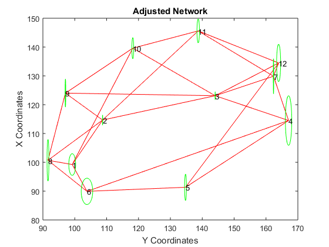

tic
format short;
X = load('X_Coordinates.csv');
Y = load('Y_Coordinates.csv');
D = load('Distances.csv');
SP = load('Start_Points.csv');
EP = load('End_Points.csv');
DG =load('Directions_Grads.csv');
DD = DG *(360/400);
dr = degtorad(DD);
sTP = load('Stand_Point.csv');
TP = load('Target_Point.csv');
dxTest = load('dxTest.csv');
for i=1:11;j=1;
swing(i,j) = atan((Y(2,1)-Y(1,1))/(X(2,1)-X(1,1)));
i=12:22;j=1;
swing(i,j) = atan((Y(1,1)-Y(2,1))/(X(1,1)-X(2,1))) + pi;
i = 23:33;j=1;
swing(i,j) = atan((Y(3,1)-Y(1,1))/(X(3,1)-X(1,1))) + pi;
i= 34:44;
swing(i,j) = atan((Y(4,1)-Y(1,1))/(X(4,1)-X(1,1))) + pi;
i = 45:49 ;
swing(i,j) = atan((Y(5,1)-Y(1,1))/(X(5,1)-X(1,1))) ;
DR= dr+swing;
end
w1=1/(0.0003^2);
w2=1/(degtorad(1/3600)^2);
W = zeros(55);
for m=1:6
W(m,m)=w1;
end
for m=7:55
W(m,m)=w2;
end
rx=[];
ry=[];
for m=1:1
ADs1 = [];
for m=1:length(SP)
i =SP(m);
j =EP(m);
dX = X(j) - X(i);
dY = Y(j) - Y(i);
ADs1(m,1) = sqrt(dX^2 + dY^2);
end
DsLM = [];
for m=1:length(ADs1)
i =D(m);
j =ADs1(m);
DsLM(m,1) = i-j;
end
sA = zeros(6,24);
sN = zeros(6,5);
for m=1:length(SP)
i=SP(m);
j=EP(m);
s=ADs1(m);
dX = X(j) - X(i);
dY = Y(j) - Y(i);
a=i*2;
b=j*2;
sA(m,a-1) = -(dX/s);
sA(m,a) = -(dY/s);
sA(m,b-1) = (dX/s);
sA(m,b) = (dY/s);
sN(m,i)=1;
end
ADs2 = [];
ADr = [];
for m=1:length(sTP)
i =sTP(m);
j =TP(m);
dX = X(j) - X(i);
dY = Y(j) - Y(i);
ADs2(m,1) = sqrt(dX^2 + dY^2);
if ((dX>0) &&(dY>0));
ADr(m,1) = atan (abs(dY/dX));
elseif ((dX<0) && (dY>0));
ADr(m,1) = pi -(atan (abs(dY/dX)));
elseif ((dX<0) && (dY<0));
ADr(m,1) = atan (abs(dY/dX)) + pi;
else ((dX>0) && (dY<0));
ADr(m,1) = (2*pi)-atan (abs(dY/dX));
end
end
DrLM = [];
for m=1:length(ADr)
i = DR(m);
j = ADr(m);
DrLM(m,1) = i-j;
end
dA = zeros(49,24);
dN = zeros(49,5);
for m=1:length(sTP)
i=sTP(m);
j=TP(m);
s=ADs2(m);
dX = X(j) - X(i);
dY = Y(j) - Y(i);
a=i*2;
b=j*2;
dA(m,a-1) = (dY/s);
dA(m,a) = -(dX/s);
dA(m,b-1) = -(dY/s);
dA(m,b) = (dX/s);
dN(m,i)=1;
end
L = [DsLM;DrLM];
Ax = [sA;dA];
At = [sN;dN];
A = [Ax At];
N = A'*W*A;
Nxx = N(1:24,1:24);
Nxt = N(1:24,25:end);
Ntx = N(25:end,1:24);
Ntt = N(25:end,25:end);
nxx = Nxx-Nxt*inv(Ntt)*Ntx ;
G = zeros(24,3);
for m=1:12
n=m*2;
a=1; b=2; c=3;
G(n-1,a) = 1;
G(n-1,b) = 0;
G(n-1,c) = Y(m);
G(n,a) = 0;
G(n,b) = 1;
G(n,c) = -X(m);
end
NXX = [nxx,G;G',zeros(3,3)];
QXX = inv(NXX);
Qxx = QXX(1:24,1:24);
nx=Ax'*W*L;
nt=At'*W*L;
n_x = nx-Nxt*inv(Ntt)*nt;
dx = Qxx*nx
for m=1:12
i=m*2-1;
j=m*2;
rx(m,1)=dx(i);
ry(m,1)=dx(j);
end
X=X+rx;
Y=Y+ry;
dxTest=dx;
Warning: Matrix is close to singular or
badly scaled. Results may be inaccurate.
RCOND = 2.229973e-23.
dx =
-0.8720
-0.8077
3.0672
-0.2782
0.9280
0.0436
-2.1970
-0.9262
3.6745
0.5479
3.0772
-2.3824
0.3208
0.4913
-1.7390
1.4288
-2.6644
0.2585
-4.3676
2.4357
-0.0867
-1.6967
0.8588
0.8855
end
v = L - Ax*dx;
apos = (v'*W*v)/(55-24);
Exx = apos*Qxx;
coords =zeros(12,3);
for m=1:12
coords(m,1)=m;
coords(m,2)=X(m);
coords(m,3)=Y(m);
end
sig = diag(Exx);
sigXY = diag(Exx,1);
sigmas =zeros(12,3);
for m=1:12
i=m*2-1;
j=m*2;
sigX(m,1)=sig(i);
sigY(m,1)=sig(j);
sigmas(m,1)=m;
sigmas(m,2)=sigX(m);
sigmas(m,3)=sigY(m);
end
a=[];
b=[];
orient=[];
elements =zeros(12,4);
for m=1:12
a(m)= (0.5*(sigX(m)+sigY(m))+sqrt(0.4*(sigX(m)-sigY(m))^2+sigXY(m)))/1000;
b(m)= (0.5*(sigX(m)+sigY(m))-sqrt(0.4*(sigX(m)-sigY(m))^2+sigXY(m)))/1000;
orient(m)= radtodeg( 0.5*atan((2*sigXY(m))/(sigX(m)-sigY(m))));
elements(m,1)=m;
elements(m,2)=abs(a(m));
elements(m,3)=abs(b(m));
elements(m,4)=orient(m);
end
x= [];
y= [];
for m=1:length(sTP)
a=sTP(m);
b=TP(m);
x(m,1) = X(a);
x(m,2) = X(b);
y(m,1) = Y(a);
y(m,2) = Y(b);
plot(y,x,'-r');
hold on
end
p= [];
q= [];
for m=1:length(elements)
t=-2*pi:0.01:2*pi;
p=X(m)+(elements(m,2)*sin(t));
q=Y(m)+(elements(m,3)*cos(t));
ellipse = plot(q,p,'-g');
text(Y(m),X(m),num2str(m));
hold on
end
xlabel('Y Coordinates');
ylabel('X Coordinates');
title('Adjusted Network');

T = (v'*W*v)/1;
chi = 46.979;
if chi <= T
display('Accept the null hypothesis')
else
display('Reject the null hypothesis')
end
toc
Accept the null hypothesis
Elapsed time is 2.012464 seconds.